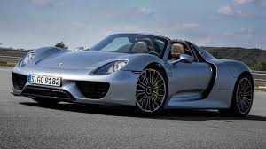
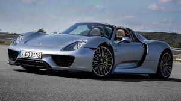

La Visión de un Ingeniero Visionario
En 1931, Ferdinand Porsche fundó un taller de ingeniería en Stuttgart, Alemania, con un objetivo claro: crear automóviles que combinaran tecnología avanzada con un diseño impecable. Aunque inicialmente trabajó en proyectos para otras marcas, como el icónico Volkswagen Beetle, Ferdinand y su hijo, Ferry Porsche, soñaban con algo más: un vehículo deportivo que encarnara la esencia de la conducción.
Este sueño tomó forma tras la Segunda Guerra Mundial, cuando Ferry decidió construir el automóvil que deseaba pero no podía encontrar: el primer Porsche.
El Inolvidable 356
En 1948, nació el Porsche 356, el primer modelo oficial de la marca. Ligero, ágil y con un diseño inspirado en el Volkswagen Beetle, este automóvil se convirtió en un éxito inmediato. Fabricado a mano en Austria, el 356 era más que un coche: era una declaración de libertad y precisión. Este modelo marcó el inicio de Porsche como un referente en el diseño y el rendimiento, y estableció una tradición que sigue viva hasta hoy.
De las Carreteras a la Gloria en las Pistas
La década de 1950 consolidó a Porsche como una fuerza en el automovilismo. El Porsche 550 Spyder, un modelo ágil y rápido, ganó reconocimiento no solo por su rendimiento en las pistas, como las 24 Horas de Le Mans, sino también por su asociación con íconos culturales como James Dean.
En 1964, Porsche presentó el modelo que definiría su legado: el 911. Diseñado por Ferdinand Alexander Porsche, el 911 revolucionó la industria automotriz con su motor trasero, su silueta inconfundible y su capacidad de combinar lujo con un rendimiento inigualable. A lo largo de las décadas, el 911 no solo ha evolucionado tecnológicamente, sino que también se ha mantenido como un símbolo de perfección atemporal.
La Excelencia de Stuttgart
Porsche no es solo una marca de autos; es una experiencia que redefine lo que significa conducir. Desde clásicos como el Carrera GT hasta innovaciones como el 918 Spyder y el totalmente eléctrico Taycan, Porsche ha demostrado su capacidad para combinar tradición e innovación.
El logotipo de Porsche, inspirado en el escudo de Stuttgart, es un emblema de orgullo alemán, precisión y calidad. Cada modelo producido por la marca es una obra maestra que refleja el compromiso con el lujo, el rendimiento y la sostenibilidad.
Dominio y Prestigio
Porsche ha establecido un récord difícil de igualar en las 24 Horas de Le Mans, con más de 20 victorias generales, y sigue dominando en competiciones como Fórmula E y GT Racing. Su enfoque en el desarrollo de tecnologías híbridas y eléctricas de alto rendimiento refuerza su compromiso con el automovilismo del futuro.
Cada éxito en las pistas no solo es un logro deportivo, sino una oportunidad para perfeccionar la ingeniería de sus autos de producción, haciendo que cada Porsche sea una extensión de su legado competitivo.

 
